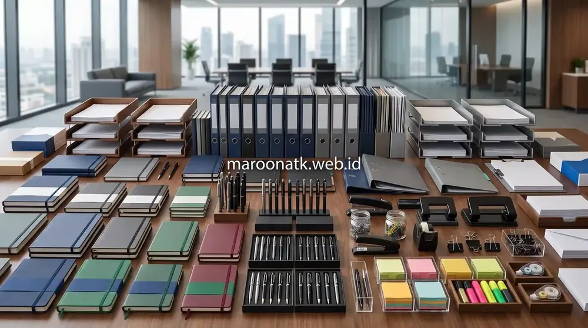
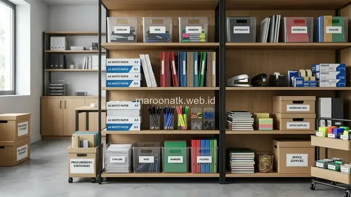

Pentingnya Mengontrol Biaya Operasional ATK Kantor
Jawaban singkat: cara menghemat opex ATK kantor yang efektif dapat dicapai melalui audit kebutuhan riil per divisi, standardisasi spesifikasi barang habis pakai, penetapan batas minimum-maksimum stok, serta beralih ke sistem pengadaan terjadwal. Penghematan sejati berfokus pada eliminasi pemborosan dan pengurangan pembelian mendadak, bukan sekadar menurunkan kualitas barang yang dapat mengganggu produktivitas karyawan.
Biaya operasional atau Operating Expenses (OPEX) untuk perlengkapan kantor sering kali dipandang sebagai pos pengeluaran minor dibanding sewa gedung atau gaji karyawan. Namun, jika tidak dipantau secara berkala, akumulasi pembelian kertas HVS, tinta printer, map arsip, dan alat tulis dapat memicu kebocoran anggaran yang cukup signifikan di setiap akhir kuartal.
Tantangan utama bagi divisi Purchasing dan General Affairs (GA) adalah merespons instruksi manajemen untuk menekan biaya tanpa menciptakan hambatan kerja bagi karyawan back-office. Mengganti perlengkapan dengan produk kualitas rendah sering kali menjadi bumerang: kertas tipis yang sering macet di mesin fotokopi, tinta toner tidak standar yang merusak drum printer, atau pulpen macet yang memperlambat administrasi harian. Oleh sebab itu, efisiensi harus bertumpu pada manajemen rantai pasok dan kontrol inventaris yang sistematis.

Daftar Inventaris Wajib dalam Paket Pengadaan Alat Tulis Kantor Baru
Panduan menyusun starter kit ATK karyawan baru yang proporsional dan terstandarisasi.
Faktor Utama Penyebab Pembengkakan Biaya ATK
Sebelum menerapkan strategi efisiensi, tim pengadaan perlu mengenali kebiasaan operasional yang sering memicu pemborosan anggaran:
- Pembelian Tidak Terencana (Emergency Purchasing): Membeli barang satuan ke toko retail saat stok di kantor habis total biasanya menghasilkan harga per unit yang lebih tinggi serta biaya kurir tambahan.
- Ketiadaan Standardisasi Item: Setiap divisi meminta merek dan spesifikasi yang berbeda-beda, sehingga purchasing kehilangan daya tawar untuk pemesanan dalam jumlah volume besar.
- Penyimpanan Tanpa Kontrol Akses: Ruang penyimpanan yang terbuka bebas tanpa pencatatan kartu stok memicu pemakaian berlebih dan hilangnya barang inventaris.
- Penumpukan Dead Stock: Membeli item musiman dalam jumlah terlalu banyak yang akhirnya rusak atau menguning di dalam lemari arsip.

Sistem penataan inventaris terpusat memudahkan pemantauan laju konsumsi barang habis pakai per departemen.

Cara Menghitung Kebutuhan ATK Kantor Bulanan Secara Akurat
Rumus praktis menghitung kuota pemakaian kertas dan alat tulis untuk perencanaan anggaran.
Langkah Praktis Efisiensi Pengadaan ATK Kantor
Berikut adalah tahapan terstruktur yang dapat diimplementasikan untuk mengoptimalkan anggaran pengadaan perlengkapan kantor:
1. Lakukan Audit Penggunaan Berdasarkan Data Historis
Kumpulkan rekapitulasi Purchase Order selama 3 hingga 6 bulan terakhir. Identifikasi item yang memiliki perputaran paling cepat (fast-moving), seperti kertas HVS 70/80gr, binder clip, ordner, dan ballpoint, serta kelompokkan item yang jarang terpakai.
2. Tetapkan Standardisasi Spesifikasi Produk
Tentukan 1 atau 2 spesifikasi standar untuk setiap kategori barang yang disetujui untuk seluruh departemen. Standardisasi mempermudah konsolidasi pesanan dalam skema paket pengadaan ATK terencana.
3. Terapkan Batas Minimum dan Maksimum Stok (Min-Max System)
Tentukan titik pemesanan ulang (reorder point) pada setiap SKU. Ketika stok mendekati batas minimum, Purchasing dapat memproses pesanan rutin sebelum persediaan habis total tanpa harus melakukan pembelian darurat.
4. Evaluasi Supplier Berdasarkan Total Value
Nilai supplier tidak hanya dari harga tercantum, tetapi juga dari keandalan pengiriman, ketersediaan buffer stock, fleksibilitas pemesanan berkala, serta kelengkapan administrasi seperti e-Faktur PPN 11% yang mempermudah rekonsiliasi akuntansi.
Tabel Checklist Efisiensi Pengendalian OPEX ATK
| Pilar Efisiensi | Tindakan Praktis | Hasil yang Diharapkan |
|---|---|---|
| Audit Konsumsi | Rekonsiliasi data pemakaian riil per departemen | Menghilangkan pembelian barang yang tidak terpakai |
| Standardisasi SKU | Batasi variasi merek untuk fungsi kerja yang sama | Memaksimalkan efisiensi pemesanan volume terpadu |
| Kontrol Inventory | Pencatatan kartu stok dan pembatasan akses gudang | Mencegah kehilangan dan pemakaian tidak terdata |
| Jadwal Pengadaan | Pemesanan berkala terpusat (bulanan/triwulan) | Menghindari biaya kurir mendadak dan harga retail eceran |
| Kemitraan Vendor | Bermitra dengan distributor B2B resmi berbadan hukum | Kestabilan pasokan dan kepatuhan faktur pajak |

Perbandingan Biaya Paket Pengadaan Alat Tulis Kantor vs Pembelian Satuan
Analisis perbandingan biaya riil antara pembelian sistem paket dan pembelian satuan acak.
Konsultasikan Skema Pengadaan ATK Hemat untuk Kantor Anda
Layanan Paket Kustom, Pengiriman Terkoordinasi, dan e-Faktur PPN Resmi
Ingin mengontrol biaya ATK kantor tanpa mengorbankan kebutuhan operasional? Konsultasikan kebutuhan pengadaan Anda bersama tim spesialis MAROON ATK melalui WhatsApp.
Kesimpulan: Efisiensi Biaya Melalui Tata Kelola Pengadaan yang Tepat
Rangkuman Strategi Efisiensi OPEX
Menghemat biaya operasional ATK kantor bukan berarti memangkas mutu barang, melainkan menata alur pengadaan agar lebih terukur dan bebas dari pemborosan.
- Audit & Kontrol: Selalu gunakan data historis dan tetapkan batas stok yang disiplin di ruang inventaris.
- Standardisasi: Satukan kebutuhan seluruh divisi ke dalam daftar SKU terstandarisasi.
- Mitra B2B Terpercaya: MAROON ATK siap membantu menyusun paket pasokan berkala yang transparan dan akuntabel bagi perusahaan Anda.
Pertanyaan Umum (FAQ) Penghematan OPEX ATK
Efisiensi OPEX ATK kantor dapat dicapai dengan melakukan audit konsumsi historis, menstandarisasi spesifikasi barang habis pakai, menetapkan batas minimum dan maksimum stok, beralih ke jadwal pengadaan rutin terencana, serta mengevaluasi supplier berdasarkan total value dan transparansi administrasi.
Pembelian jumlah besar (bulk) berpotensi memberikan efisiensi harga per unit, namun harus diselaraskan dengan tingkat perputaran barang dan kapasitas ruang penyimpanan agar tidak menimbulkan risiko barang kedaluwarsa, rusak, atau menjadi dead stock.
Terapkan sistem pencatatan inventaris terpusat, gunakan kartu stok atau sistem logistik internal, tetapkan PIC pengeluaran barang per departemen, dan lakukan rekonsiliasi pemakaian bulanan untuk mendeteksi anomali konsumsi.

Arby Ardiansyah
Arby Ardiansyah merupakan praktisi dan penulis konten MAROON ATK yang membahas kebutuhan pengadaan ATK, furniture kantor, teknologi display, dan tata kelola procurement B2B di Indonesia.